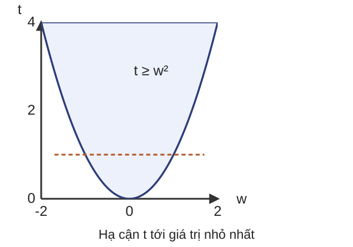
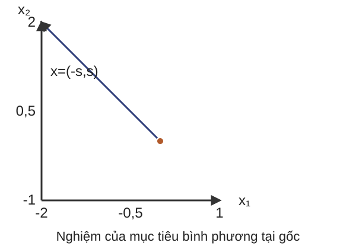
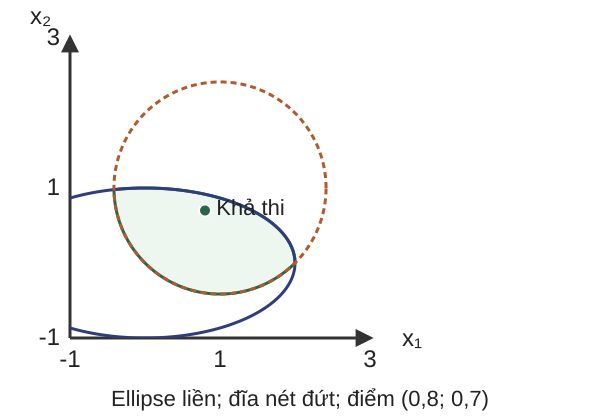

Bài 02: Các bài toán tối ưu lồi
Mô hình hóa nhu cầu, nhận dạng cấu trúc, kiểm tra phép cải dạng
Cơ sở toán học cho AI · Học kỳ 1, 2026–2027
Mục tiêu và lộ trình bài học
- Tiên quyết: đại số tuyến tính, đạo hàm, tập lồi, hàm lồi.
- Sản phẩm: viết dữ liệu–biến–miền–mục tiêu–ràng buộc; nhận dạng và cải dạng; chứng nhận; diễn giải nghiệm.
- Lộ trình: hồi quy có ràng buộc; thiết kế kích thước; kiểm soát phương sai theo mọi hướng.
- Tựa lồi và nhiều mục tiêu ở phần mở rộng.
Mỗi mô hình cần giả thiết, chứng nhận tính lồi và cách diễn giải nghiệm.
Dự đoán nhu cầu từ hai tín hiệu tải
- Tín hiệu chuẩn hóa $z\in[0,1]^2$, dự đoán $\widehat y=w^Tz$.
- Yêu cầu: dự đoán không âm, không giảm theo từng tín hiệu, không quá $2$ trên hộp.
- Chọn $w\ge0,\ \mathbf1^Tw\le2$.
- Dữ liệu huấn luyện $X=I_2,\ y=(2,1)^T$; biến cần tìm $w\in\mathbb R^2$.
$$\min_{w\in C}\lVert Xw-y\rVert_2^2,\quad C=\{w\ge0:\mathbf1^Tw\le2\}$$
Đầu ra: trọng số và sai số huấn luyện.
Dữ liệu, biến và đầu ra của một mô hình
$x\in D\subseteq\mathbb R^n$, dữ liệu cố định trong các hàm:
$$\begin{aligned}\min_{x\in D}\quad & f_0(x)\\ \text{với}\quad & f_i(x)\le0\ (i=1,\ldots,m),\\ &h_j(x)=0\ (j=1,\ldots,p).\end{aligned}$$
$\mathcal F=\{x\in D:f_i(x)\le0,\ h_j(x)=0\}$; $p^*=\inf_{x\in\mathcal F}f_0(x)$.
Ví dụ hồi quy: $x=w$, $D=\mathbb R^2$, $f_0=\lVert Xw-y\rVert_2^2$, các bất đẳng thức $-w_1\le0$, $-w_2\le0$, $w_1+w_2-2\le0$.
Nghiệm $w^*$ khác giá trị $p^*$.
Chứng nhận một bài toán lồi
- $\min_{x\in D}f_0(x)$ với $f_i(x)\le0$, $Ax=b$.
- $D$ lồi; mọi $f_i$ kể cả $f_0$ lồi trên $D$; đẳng thức affine.
Với hồi quy: $\nabla^2f_0=2X^TX$ và $v^T(2X^TX)v=2\lVert Xv\rVert_2^2\ge0$ với mọi $v$.
Các ràng buộc đều affine.
Kết luận: mô hình là quy hoạch bậc hai (QP) lồi.
Tập khả thi lồi riêng nó chưa đủ chứng nhận mục tiêu.
Khả thi, tồn tại và duy nhất
- Bốn câu hỏi khác nhau: $\mathcal F\ne\varnothing$? $p^*$ hữu hạn? Có $x^*$ đạt $p^*$? Có duy nhất không?
- $\inf_{x>0}x=0$ không đạt; $\min_{x\in[0,1]}0=0$ có nhiều nghiệm.
Với hồi quy minh họa: $C$ không rỗng và đóng bị chặn (compact), mục tiêu liên tục nên đạt nghiệm; $X=I_2$ làm mục tiêu lồi chặt (còn gọi là lồi nghiêm ngặt) nên nghiệm duy nhất.
Nghiệm hồi quy phải thỏa giới hạn triển khai
$$\min_{w\in C}(w_1-2)^2+(w_2-1)^2$$
- Nghiệm không ràng buộc $(2,1)$ vi phạm tổng trọng số.
- Nghiệm có ràng buộc $w^*=(1{,}5,\,0{,}5)$, $p^*=0{,}5$.
- Đọc nghiệm: $\widehat y=1{,}5z_1+0{,}5z_2$.
QP lồi và mô hình bình phương tối thiểu
$$\begin{aligned}\min_w\ &\tfrac12w^TPw+q^Tw+r\\ \text{với }&Aw\le b,\ Gw=h.\end{aligned}$$
- $w,q\in\mathbb R^d$; $P\in\mathbb S^d$, tức tập ma trận đối xứng cấp $d$; $P\succeq0$ (nửa xác định dương, PSD) nghĩa là $v^TPv\ge0$ với mọi $v\in\mathbb R^d$.
- $A,G$ có $d$ cột; $b,h$ khớp số hàng.
Hồi quy $X\in\mathbb R^{N\times d},y\in\mathbb R^N$:
$$P=2X^TX,\quad q=-2X^Ty,\quad r=y^Ty$$
$P\succ0$ cho nhiều nhất một nghiệm. Giữ $r$ khi báo giá trị tối ưu.
Tập trên đồ thị và biến chặn mục tiêu
Với $f:C\to\mathbb R$, biến $t$ chặn $f(w)$.
$$\begin{aligned}\inf_{w\in C}f(w)&=\inf_{w,t}\ t\\ &\quad\text{với }w\in C,\ f(w)\le t.\end{aligned}$$
- Tập trên đồ thị (epigraph): $\{(w,t):w\in C,\ f(w)\le t\}$; $f,C$ lồi thì tập này lồi.
- Khôi phục: $(w,t)\mapsto w$; nâng một $w$ thành $(w,f(w))$.
- Ở nghiệm tối ưu đạt được: $t^*=f(w^*)$.

Cùng dữ liệu, đổi yêu cầu sang sai số lớn nhất
$$\min_{w\in C}\max_i\lvert X_iw-y_i\rvert$$
với $X_i$ là hàng thứ $i$ của $X$, $i=1,\ldots,N$, $N\ge1$.
Cải dạng quy hoạch tuyến tính (LP): $\min_{w,t}t$ với $Xw-y\le t\mathbf1$, $-Xw+y\le t\mathbf1$, $w\in C$; $t\ge0$ tự suy ra khi $N\ge1$.
Với dữ liệu cũ: $w^*=(1{,}5,\,0{,}5)$, $t^*=0{,}5$.
LP và dấu hiệu nhận dạng
$$\min_{x\in\mathbb R^n}c^Tx\quad Ax\le b,\ Gx=h$$
- $A\in\mathbb R^{m\times n}$, $G\in\mathbb R^{p\times n}$; $c\in\mathbb R^n$, $b\in\mathbb R^m$, $h\in\mathbb R^p$; miền là đa diện.
- Với $c\ne0$, đường mức là các siêu phẳng song song.
- Minimax sau cải dạng là LP dù biểu thức ban đầu có trị tuyệt đối và cực đại.
Phân bổ hai nguồn có cùng chất lượng
- Cần ít nhất $3$ đơn vị nguyên liệu cùng chất lượng; chi phí hai nguồn $1$ và $2$ điểm/đơn vị.
- Biến $x_i\ge0$ là lượng mua liên tục.
- Giả thiết: chất lượng tương đương, cộng được lượng, chi phí tỷ lệ thuận, chưa có trần cung.
$$\min x_1+2x_2\quad x_1+x_2\ge3$$
Đầu ra: lượng từng nguồn và tổng chi phí.
Hình học và thay đổi giới hạn nguồn cung
- Nghiệm $x^*=(3,0)$, $p^*=3$.
- Đường mức $x_1+2x_2=k$ với $k=5,4,3$ chạm tại $(3,0)$.
- Câu hỏi: thêm $x_1\le2$, dự đoán nghiệm mới.
Các phép biến đổi mô hình
- Cải dạng chính xác với biến phụ: giữ infimum, khôi phục nghiệm.
- Đổi biến song ánh và mục tiêu tăng nghiêm ngặt: giữ thứ tự và nghiệm, giá trị có thể đổi.
- Thư giãn: mở rộng miền, cho cận dưới khi cực tiểu cùng mục tiêu.
- Xấp xỉ: thay một quan hệ bằng mô hình gần đúng, cần đánh giá sai số.
Mỗi phép biến đổi phải ghi miền, điều kiện và ánh xạ khôi phục.
Cùng miền khả thi chưa đủ kết luận bài toán lồi
Trên $\mathbb R^2$: $x_1/(1+x_2^2)\le0$ và $(x_1+x_2)^2=0$ tương đương $x_1\le0$, $x_1+x_2=0$, tức $x=(-s,s)$, $s\ge0$.
$$\min\lVert x-(1,1)\rVert_2^2$$
Sau cải dạng là QP lồi, nghiệm $x^*=0$, $p^*=2$.

Giới hạn độ nhạy của mô hình hồi quy
Yêu cầu: với mọi nhiễu $\Delta z$ có $\lVert\Delta z\rVert_2\le1$, muốn $\lvert w^T\Delta z\rvert\le1$, tương đương $\lVert w\rVert_2^2\le1$.
$$\begin{aligned}\min_{w\in C}\ &\lVert Xw-y\rVert_2^2\\ \text{với }&\lVert w\rVert_2^2\le1.\end{aligned}$$
Nghiệm $w^*=(2,1)/\sqrt5$, $p^*=(\sqrt5-1)^2\approx1{,}5279$.
Dạng chuẩn của quy hoạch bậc hai có ràng buộc bậc hai
$$\begin{aligned}\min_x\ &\tfrac12x^TP_0x+q_0^Tx+r_0\\ \text{với }&\tfrac12x^TP_ix+q_i^Tx+r_i\le0,\ i=1,\ldots,m,\\ &Ax=b.\end{aligned}$$
- $x,q_i\in\mathbb R^n$, $P_i\in\mathbb S^n$, $P_i\succeq0$ cho mọi $i=0,\ldots,m$.
- Kiểm tra cả mục tiêu và mọi ràng buộc.
Ví dụ chuẩn: ràng buộc $\lVert w\rVert_2^2\le\tau$ có $P_1=2I$, $q_1=0$, $r_1=-\tau$.
Phản ví dụ kiểm tra bằng trung điểm
Câu hỏi: dùng trung điểm để kiểm tra tính lồi của $C=\{x:x_1^2-x_2^2\le1\}$; ma trận $\operatorname{diag}(1,-1)$ không PSD.
Hai điểm $a=(\sqrt2,1)$, $b=(\sqrt2,-1)$ khả thi; trung điểm $(\sqrt2,0)$ cho giá trị $2>1$.
Kết luận: tập cụ thể này không lồi.
Phạt độ lớn và đặt trần là hai lựa chọn mô hình
Hồi quy có phạt bình phương chuẩn (ridge) trên $C$, $\lambda\ge0$:
$$\min_{w\in C}\lVert Xw-y\rVert_2^2+\lambda\lVert w\rVert_2^2$$
Hessian $2X^TX+2\lambda I\succeq0$: QP.
Với mục tiêu sai số không phạt, thêm $\lVert w\rVert_2^2\le\tau$: QCQP.
Với $X=I_2$, $y=(2,1)$, $\lambda=1$:
- $w^*=(1,\,0{,}5)$
- Tổng bình phương sai số $=1{,}25$
- Mục tiêu ridge $=2{,}5$; chuẩn bình phương $=1{,}25$
Cùng một nhu cầu, các lớp mô hình khác nhau
- Sai số tệ nhất + ràng buộc affine → LP sau epigraph.
- Tổng bình phương sai số + ràng buộc affine → QP.
- Tổng bình phương sai số + giới hạn chuẩn bình phương → QCQP.
Ở mức dạng chuẩn: LP $\subseteq$ QP lồi $\subseteq$ QCQP lồi, cho phép hệ số bậc hai bằng $0$.
Sự thay đổi mục tiêu hoặc ràng buộc xuất phát từ yêu cầu, không từ việc muốn dùng một lớp bài toán.
Kích thước dầm và nhu cầu vật liệu
Nhu cầu minh họa: chọn kích thước các đoạn dầm để giảm thể tích, chịu cùng tải đầu mút và không vượt độ võng cho phép.
Bắt đầu với chiều rộng cố định, sau đó cho phép thay đổi cả rộng lẫn cao.
Câu hỏi: tích các kích thước xuất hiện ở đâu, nghịch đảo lũy thừa xuất hiện ở đâu?

Dầm có chiều rộng cố định
Bốn đoạn bằng nhau, tiết diện chữ nhật, cùng vật liệu và chiều rộng. Biến $H_i=h_i/h_{\rm ref}>0$ không đơn vị.
Dữ liệu minh họa $d=(37,19,7,1)/64$, đánh số từ ngàm tới đầu tự do.
Câu hỏi: chứng nhận tính lồi của mô hình theo $H$.
Cho phép thiết kế cả chiều rộng và chiều cao
Biến không đơn vị $B_i,H_i>0$, $i=1,\ldots,4$, chuẩn hóa hai chiều bằng cùng độ dài $s_0$. Dữ liệu $d=(37,19,7,1)/64$, giới hạn tỉ lệ minh họa $H_i\le 2B_i$.
Đầu ra: kích thước và thể tích chuẩn hóa.
Mục tiêu có các tích $B_iH_i$; Hessian mỗi tích có trị riêng $+1,-1$, nên biểu diễn hiện tại chưa là dạng lồi chuẩn.
Đơn thức và đa thức dương
Trên $x\in\mathbb R_{++}^n$:
- Đơn thức: $g(x)=c\prod_jx_j^{a_j}$ với $c>0$, $a_j\in\mathbb R$.
- Đa thức dương (posynomial): $f(x)=\sum_{k=1}^Kc_k\prod_jx_j^{a_{kj}}$, $c_k>0$, $K$ hữu hạn dương.
Gắn trực tiếp: $B_iH_i$, $d_iB_i^{-1}H_i^{-3}$ và $H_i/(2B_i)$ là đơn thức; tổng thể tích và tổng độ võng là đa thức dương.
Hệ số âm hoặc hiệu hai đơn thức không được nhận dạng theo quy tắc này.
Dạng chuẩn của quy hoạch hình học
Mọi $f_i$ ($i=0,\ldots,m$) là đa thức dương; mọi $g_j$ ($j=1,\ldots,p$) là đơn thức.
Giới hạn $f(x)\le a$, $a>0$, chuẩn hóa thành $f(x)/a\le 1$. Đẳng thức posynomial tổng quát không hợp lệ.
GP có thể chưa lồi theo $x$ nhưng có biểu diễn lồi bằng phép đổi log.
Hàm log-tổng-mũ
Với $z\in\mathbb R^K$, hàm lse là hàm lồi. Với $a_k,y\in\mathbb R^n$, $b_k\in\mathbb R$, các hàm $z_k=a_k^Ty+b_k$ affine, $\operatorname{lse}(z(y))$ lồi theo $y$. Trường hợp $K=1$ cho $a_1^Ty+b_1$.
Câu hỏi: log của một hàm lồi bất kỳ có nhất thiết lồi không?
Phép đổi biến log
$y_j=\log x_j\in\mathbb R$, $x_j=e^{y_j}$.
- Đơn thức: $\log g(e^y)=\log c+a^Ty$.
- Đa thức dương: $\log f(e^y)=\operatorname{lse}_k(a_k^Ty+\log c_k)$.
Vì log tăng nghiêm: $f_i(x)\le 1\Leftrightarrow\log f_i(e^y)\le 0$, $g_j(x)=1\Leftrightarrow\log g_j(e^y)=0$.
Mục tiêu mới $\min_y\log f_0(e^y)$ là lồi; đẳng thức mới affine.
Khôi phục nghiệm và giá trị mục tiêu
$x=\exp y$ là song ánh giữa các miền khả thi tương ứng. Nếu đạt tối ưu: $x^*=\exp y^*$ và $y^*=\log x^*$.
Với $0<p^*<\infty$: giá trị mới $\widetilde p^*=\log p^*$, do đó $p^*=\exp\widetilde p^*$.
Cùng thứ tự giá trị sau biến đổi; không phải cùng giá trị số. Khả thi và tính đạt infimum được bảo toàn qua song ánh này.
Cải dạng dầm có hai kích thước
Đặt $u_i=\log B_i$, $v_i=\log H_i$.
Mục tiêu và bất đẳng thức đầu là lse của affine; các giới hạn tỉ lệ là affine. Khôi phục $B_i=e^{u_i}$, $H_i=e^{v_i}$.
Tám biến trước/sau, một ràng buộc độ võng và bốn giới hạn tỉ lệ.
Kiểm tra bằng một đoạn và diễn giải kích thước
Dữ liệu minh họa một đoạn: $d=1$.
Nghiệm $B^*=2^{-3/4}\approx 0{,}5946$, $H^*=2^{1/4}\approx 1{,}1892$; $V^*=2^{-1/2}\approx 0{,}7071$, $\widetilde V^*=-(\log 2)/2$.
Câu hỏi: thế lại nghiệm vào hai ràng buộc và tính thể tích.
Dữ liệu sai số của hai cấu hình đo
Cần chọn giữa hai cấu hình đo có sai số $e\in\mathbb R^2$ đã chuẩn hóa, trung bình 0.
Ma trận hiệp phương sai (covariance) $\Sigma=\mathbb E[ee^T]$ khi $\mathbb E[e]=0$; $\mathbb E$ là trung bình theo phân phối các lần đo.
Phần tử đường chéo là phương sai từng tọa độ, phần tử ngoài đường chéo mô tả hiệp phương sai. Các đại lượng dùng cùng thang chuẩn hóa bình phương.
Yêu cầu giảm phương sai theo mọi hướng
Chọn cấu hình 1 ngẫu nhiên với xác suất $\alpha\in[0,1]$, cấu hình 0 với xác suất $1-\alpha$. Với cùng trung bình 0: $\Sigma(\alpha)=(1-\alpha)\Sigma_0+\alpha\Sigma_1$.
Phương sai theo hướng đơn vị $q$ là $\operatorname{Var}(q^Te)=q^T\Sigma(\alpha)q$.
Biến cần tìm: $\alpha$; $q$ là hướng dùng để đánh giá. Đầu ra: xác suất chọn cấu hình và phương sai hướng xấu nhất.
Nón PSD và thứ tự ma trận
$\mathbb S^r$ là không gian các ma trận thực đối xứng cấp $r$; $M,A\in\mathbb S^r$.
Tập $\mathbb S_+^r$ là nón lồi. $A\preceq tI$ nghĩa là $tI-A\succeq 0$, tương đương mọi trị riêng của $A$ không vượt $t$.
Đây không phải so sánh từng phần tử. Câu hỏi: kiểm tra $\begin{bmatrix}1&2\\2&1\end{bmatrix}$.
Tập trên đồ thị của trị riêng lớn nhất
Ví dụ đường chéo để kiểm tra ký hiệu: $A(x)=\operatorname{diag}(x,2-x)$, $\min_{x,t}t$ với $tI-A(x)\succeq 0$.
Tương đương $t\ge x$, $t\ge 2-x$, nên $x^*=1$, $t^*=1$.
Đây là bất đẳng thức ma trận tuyến tính (LMI) vì ma trận phụ thuộc affine vào $(x,t)$; ca đường chéo này cũng là LP.
Dạng SDP và chứng nhận LMI
Biến $z\in\mathbb R^n$, dữ liệu $c\in\mathbb R^n$, $F_0,\ldots,F_n\in\mathbb S^r$.
Cộng thêm đẳng thức affine nếu có. Đây là quy hoạch nửa xác định (SDP).
Một LMI có tập khả thi lồi vì nghịch ảnh của nón PSD qua ánh xạ affine là lồi.
Trong ví dụ hiệp phương sai, chọn $z=(\alpha,t)$, ma trận $tI-\Sigma_0-\alpha(\Sigma_1-\Sigma_0)$. Bất đẳng thức affine là LMI cấp 1, nên có thể thêm $0\le\alpha\le 1$.
Nghiệm thiết kế phép đo và ý nghĩa của LMI
$\min_{\alpha,t}t$ với $tI-\Sigma(\alpha)\succeq 0$, $0\le\alpha\le 1$.
Nghiệm $\alpha^*=1/2$, $t^*=1{,}5$; chọn riêng một cấu hình cho $1+\sqrt{1/2}\approx 1{,}7071$.
Câu hỏi: kiểm tra ma trận $tI-\Sigma(\alpha)$ tại nghiệm.
Bảng kiểm trước khi chọn lớp bài toán
- Đặc tả dữ liệu, biến, miền và đầu ra.
- Kiểm tra toàn bộ mục tiêu và ràng buộc: affine → LP; mục tiêu bậc hai PSD với ràng buộc affine → QP; mọi bậc hai PSD với đẳng thức affine → QCQP; đúng cấu trúc posynomial/đơn thức trên miền dương → GP và phép log; mục tiêu affine với LMI → SDP.
- Ghi ánh xạ nghiệm và quan hệ giá trị.
- Kiểm tra khả thi, tính đạt nghiệm, diễn giải.
Không có dấu hiệu nào là điều kiện "chỉ cần nhìn thấy một hạng".
Bài tập kết thúc: viết mô hình và kiểm tra cải dạng
Cho $X\in\mathbb R^{N\times d}$, $y\in\mathbb R^N$, trọng số $w\ge 0$, $\mathbf 1^Tw\le 2$.
- (a) Muốn giảm sai số lớn nhất: viết mô hình và cải dạng.
- (b) Thêm $\lVert w\rVert_2^2\le 1$: lớp mô hình thay đổi ra sao?
- (c) Nêu cách đọc lại $w$ và giá trị sai số từ biến phụ.
Câu hỏi: phép log có giữ giá trị tối ưu không; PSD có phải dấu từng phần tử không?
Tài liệu và nội dung mở rộng
- Boyd và Vandenberghe (2004), Convex Optimization, §§3.1.5, 3.4, 4.1–4.7 và A.5.5.
- Boyd (2009), MIT 6.079, Lecture 4: Convex optimization problems.
- Ghi chú bài giảng và bài tập: suy diễn, giả thiết và nguồn bổ sung.
Bài tiếp theo: Lagrange, đối ngẫu và điều kiện tối ưu.
Khử đẳng thức và thêm biến dư
Hai phép cải dạng bảo toàn giá trị tối ưu:
- Khử affine: nếu $Ax=b$ khả thi, chọn $Ax_0=b$ và $F\in\mathbb R^{n\times(n-r)}$ với các cột là cơ sở $\ker A$, $r=\operatorname{rank}A$. Đặt $x=x_0+Fz$ rồi thay vào mục tiêu, mọi ràng buộc và miền $D$.
- Biến dư: $a^Tx\le b\iff\exists s\ge0:\ a^Tx+s=b$. Khôi phục $x$ bằng cách bỏ tọa độ $s$; nâng nghiệm bằng $s=b-a^Tx$.
$$x_1+x_2=1\Rightarrow x=(z,\,1-z)$$
Điều kiện $x\ge0$ trở thành $0\le z\le1$, không được bỏ.
Luyện giải QP trên đơn hình (simplex)
Bài toán: $\min\ x_1^2+4x_2^2$ với $x_1+x_2=1$, $x_1,x_2\ge0$.
Thế $x_2=1-x_1$, $0\le x_1\le1$:
$$g(x_1)=5x_1^2-8x_1+4$$
Câu hỏi: tìm $(x^*,p^*)$ và giải thích vì sao nghiệm duy nhất.
Chứng nhận QCQP bằng Hessian và hình học
Bài toán: $\min_{x\in\mathbb R^2}-x_1-x_2$ với
$$\begin{aligned}x_1^2+4x_2^2&\le4,\\ (x_1-1)^2+(x_2-1)^2&\le2\end{aligned}$$
Câu hỏi: xác định Hessian, vẽ hai miền, kiểm tra giao khác rỗng, kết luận lớp bài toán. Chưa yêu cầu nghiệm tối ưu.

So sánh LP và QP trên cùng một miền
Miền chung: $\mathcal F=\{x\in\mathbb R_+^2:\ 2x_1+x_2\ge1,\ x_1+3x_2\ge1\}$.
- Ca a: $\min\ x_1+x_2$.
- Ca c: $\min\ x_1$.
- Ca e: $\min\ x_1^2+9x_2^2$.
Câu hỏi: với mỗi ca, phân loại, tìm nghiệm hoặc tập nghiệm và $p^*$.
Quy hoạch hình học và bất đẳng thức trung bình
Với $x,y>0$, $x+y\le4$, tìm $\min\ (xy)^{-1}$.
Ràng buộc chuẩn quy hoạch hình học (GP): $0{,}25x+0{,}25y\le1$.
$$\sqrt{xy}\le\frac{x+y}{2}\le2\ \Rightarrow\ xy\le4$$
Dấu bằng tại $x=y=2$, nên $p^*=1/4$.
Bài toán này vừa là GP vừa đã lồi theo $x,y$; log không bắt buộc để có tính lồi ở đây. Nếu lấy log mục tiêu, giá trị mới là $-\log 4$, không phải $1/4$.
Bài tập đổi log và khôi phục biến
Bài toán: $\min_{u,v>0}\ 2u^{-1}v^{-1}+uv^{-2}$ với $0{,}5u+0{,}25v\le1$.
Đặt $y_1=\log u$, $y_2=\log v$. Viết mục tiêu và ràng buộc mới, chứng nhận tính lồi, nêu cách khôi phục $u,v$.
Câu hỏi: nếu biết giá trị mới $\tilde p^*$ hữu hạn, khôi phục giá trị gốc thế nào?
$$cu^av^b\mapsto\exp(\log c+ay_1+by_2)$$
Mở rộng: thứ tự do nón sinh
Trong không gian hữu hạn chiều $E$, cho nón $K$ lồi, đóng, nhọn, có phần trong khác rỗng:
$$u\preceq_Kv\iff v-u\in K$$
- $E=\mathbb R^q$, $K=\mathbb R_+^q$: $u_i\le v_i$ với mọi $i$.
- $E=\mathbb S^r$, $K=\mathbb S_+^r$: $X\preceq Y\iff Y-X\succeq0$.
Ở đây $\mathbb S^r$ là không gian các ma trận đối xứng cấp $r$, và $\mathbb S_+^r$ là tập các ma trận đối xứng nửa xác định dương: $M\succeq0\iff z^TMz\ge0$ với mọi $z\in\mathbb R^r$. Thứ tự này không phải so từng phần tử.
Một khuôn chung cho LP và SDP
Với $c\in\mathbb R^n$, $A\in\mathbb R^{p\times n}$, $b\in\mathbb R^p$, ánh xạ tuyến tính $G:\mathbb R^n\to E$ nhận giá trị trong $E$, và $h\in E$:
$$\begin{aligned}\min\ &c^Tx\\ \text{sao cho}\quad &Ax=b,\\ &h-Gx\in K\end{aligned}$$
- $K=\mathbb R_+^m$: $Gx\le h$, thu LP.
- $K=\mathbb S_+^r$: $h-Gx$ phải nửa xác định dương, thu quy hoạch nửa xác định (SDP).
Lồi vì nghịch ảnh của nón lồi qua ánh xạ affine là tập lồi.
Chặn chuẩn phổ bằng LMI
Với $A\in\mathbb R^{m\times n}$, $t\in\mathbb R$:
$$\lVert A\rVert_2\le t\iff\begin{bmatrix}tI_m&A\\A^T&tI_n\end{bmatrix}\succeq0$$
Nếu $A=A(x)$ affine theo $x$, đây là bất đẳng thức ma trận tuyến tính (LMI) cấp $m+n$.
Với $A$ đối xứng: $A\preceq tI$ chỉ chặn $\lambda_{\max}$; chuẩn phổ cần $-tI\preceq A\preceq tI$.
Câu hỏi: tìm $\min_{x\in\mathbb R}\lVert\operatorname{diag}(x,3-x)\rVert_2$ và viết LMI tương ứng.
Bổ đề Schur và trường hợp biên
Đặt $M=\begin{bmatrix}tI_m&A\\A^T&tI_n\end{bmatrix}$.
- $t>0$: bổ đề Schur cho $M\succeq0\iff tI_n-t^{-1}A^TA\succeq0\iff A^TA\preceq t^2I_n\iff\lVert A\rVert_2\le t$.
- $t=0$: $M\succeq0$ buộc $A=0$; điều kiện chuẩn cũng buộc $A=0$.
- $t<0$: cả hai điều kiện đều sai.
Không dùng $(tI)^{-1}$ tại $t=0$.
Với khối $B\succ0$: $\begin{bmatrix}B&C\\C^T&D\end{bmatrix}\succeq0\iff D-C^TB^{-1}C\succeq0$.
Mở rộng: khi chỉ các tập mức dưới lồi
Trên miền lồi $D$, hàm $f:D\to\mathbb R$ là tựa lồi nếu
$$S_t=\{x\in D:\ f(x)\le t\}$$
lồi với mọi $t\in\mathbb R$.
Ví dụ $f(x)=x^3$, $D=[-1,1]$: $S_t$ rỗng nếu $t<-1$; là $[-1,\sqrt[3]{t}]$ nếu $-1\le t<1$; bằng $D$ nếu $t\ge1$.
Phân thức không lồi nhưng kiểm tra mức là affine
Chọn $x=(x_1,x_2)\in C=[0,2]\times[1,2]$, mục tiêu $f(x)=x_1/x_2$; mẫu số luôn dương.
Với mỗi $t$ cố định:
$$f(x)\le t\iff x_1-tx_2\le0$$
Giao với $C$ là bài toán khả thi có ràng buộc affine, nên mọi tập mức lồi.
Ba bước chia đôi có thể kiểm tra bằng tay
$\min_{x\in[0,2]}f(x)=(x^2+1)/(x+2)$. Do $x+2>0$, kiểm tra mức $t$ bằng
$$\phi_t(x)=x^2+1-t(x+2)\le0$$
Khởi tạo $[l_0,u_0]=[0,1]$, điểm khả thi $\hat x_0=0$, $f(0)=1/2\le u_0$.
- $t=0{,}5$: khả thi → $[0,\,0{,}5]$.
- $t=0{,}25$: không khả thi → $[0{,}25,\,0{,}5]$.
- $t=0{,}375$: không khả thi → $[0{,}375,\,0{,}5]$.
Đầu ra và bảo đảm của chia đôi
Giả sử mỗi kiểm tra $C\cap\{x:f(x)\le t\}$ có biểu diễn lồi, được quyết định chính xác và trả điểm nếu khả thi. Đầu vào: $l_0,u_0\in\mathbb R$, $l_0\le p^*\le u_0<\infty$, $\varepsilon>0$, điểm $\hat x_0\in C$ với $f(\hat x_0)\le u_0$.
Đặt $(l,u,\hat x)=(l_0,u_0,\hat x_0)$. Khi $u-l>\varepsilon$:
- $t=(l+u)/2$; gọi kiểm tra mức $t$.
- Có điểm $x_t$: $(u,\hat x)\leftarrow(t,x_t)$; vô nghiệm: $l\leftarrow t$.
Trả $[l,u]$ và $\hat x$. Bất biến: $l\le p^*\le u$, $f(\hat x)\le u$; đầu ra thỏa $0\le f(\hat x)-p^*\le\varepsilon$.
Số lần gọi: nếu $u_0-l_0\le\varepsilon$ thì $N=0$; nếu lớn hơn, $N=\lceil\log_2((u_0-l_0)/\varepsilon)\rceil$. Mỗi vòng giảm độ rộng một nửa.
Nhận dạng qua biểu diễn tương đương
Câu hỏi: với mỗi bài toán, nêu miền, kết luận độ cong và phép cải dạng nếu dùng.
- $\min_{x\in\mathbb R}\max\{x,\,-x+2\}$.
- $\min_{x\in[-1,1]}x^3$.
- $\min_{x\in\mathbb R}x^2$ với $(x-1)^2=0$.
Ba khả năng: ở dạng chuẩn lồi; tựa lồi nhưng không lồi; chưa ở dạng chuẩn nhưng có biểu diễn tương đương lồi.
Mở rộng: khi hai tiêu chí xung đột
Biến $x\in[0,2]$, hai tiêu chí cùng cần giảm:
$$\Phi_1(x)=x^2,\qquad \Phi_2(x)=(x-2)^2$$
Nếu $0\le x<y\le2$ thì $\Phi_1(x)<\Phi_1(y)$ nhưng $\Phi_2(x)>\Phi_2(y)$. Không điểm nào cải thiện một tiêu chí mà không làm xấu tiêu chí kia.
Phần tử nhỏ nhất, Pareto và quan hệ trội
Tập giá trị đạt được $\mathcal O=\Phi(\mathcal F)$; xét $y^*\in\mathcal O$.
- Nhỏ nhất: $y^*\preceq y$ với mọi $y\in\mathcal O$.
- Tối tiểu: không tồn tại $y\in\mathcal O$, $y\ne y^*$, thỏa $y\preceq y^*$; tương ứng giá trị Pareto.
Với so sánh theo từng thành phần, $y$ trội $y^*$ khi không lớn hơn ở mọi thành phần và nhỏ hơn ở ít nhất một thành phần. Nghiệm Pareto $x^*\in\mathcal F$ có $\Phi(x^*)$ tối tiểu.
Điều kiện vô hướng hóa bằng trọng số
$\min_{0\le x\le2}\lambda x^2+(1-\lambda)(x-2)^2$, $0\le\lambda\le1$. Nghiệm $x^*=2(1-\lambda)$; hai đầu $\lambda=1,0$ lần lượt cho $x^*=0,2$.
Chiều thuận: với mọi trọng số $w_i>0$, mọi nghiệm của $\min_{x\in\mathcal F}\sum_iw_i\Phi_i(x)$ là Pareto.
Chiều đảo cho bài toán lồi: nếu $\mathcal F$ lồi, từng $\Phi_i$ lồi, mỗi nghiệm Pareto tối ưu cho một $w\ge0$, $w\ne0$; có thể cần trọng số bằng $0$.
Trọng số không âm khác $0$ không bảo đảm mọi nghiệm vô hướng hóa là Pareto.
Kiểm tra quan hệ trội và chọn trọng số
Câu hỏi: so sánh các phương án khi cả hai tiêu chí đều cần giảm.
- Trong các điểm $(1,4),(2,2),(4,1),(3,3)$, tìm những điểm không bị trội.
- Với $\Phi(x)=(x^2,(x-2)^2)$, $x\in[0,2]$, $\lambda=1/4$, tìm nghiệm vô hướng hóa và hai giá trị tiêu chí.
- Khi cho một trọng số bằng $0$, có thể tự kết luận mọi nghiệm đều Pareto không?